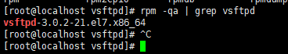
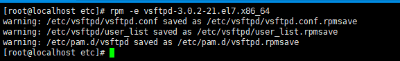
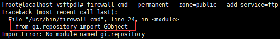
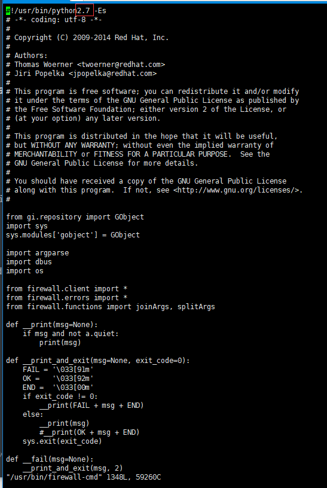
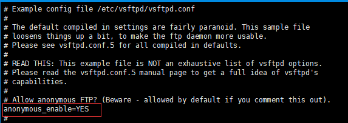

基于centOS 7搭建FTP服务器
分别基于匿名用户、本地用户、虚拟用户这三种登录模式详解FTP的搭建过程
在开始接触服务器搭建的时候，参考过网上很多资料，不过内容五花八门，而且表述也不清楚。归根结底，是因为自己在动手搭建的时候并没有对FTP有一个初步的认识；没有正确理解参考博客所对应的配置模式，从而导致同时参考多份博客的配置但最终结果已然无效。所以在此总结一下自己的搭建心得，分别对不同的登录模式进行归纳总结。
关于FTP的工具类详见Github
安装FTP
首先检查本机是否装有FTP服务器，命令：rpm -qa | grep vsftpd；效果如下图所示：

如果没有，则执行如下命令进行安装:
yum -y install vsftpd
若想卸载FTP，执行命令：rpm -e vsftpd-***；执行效果如下图所示：

删除后会保留主要的配置文件，并命名为.rpmsave后缀；如不需要，则可自行手动删除。
防火墙、SELinux 设置
防火墙设置
首先保证开启firewalld服务：systemctl start firewalld.service
然后分别执行如下命令
firewall-cmd --permanent --zone=public --add-service=ftp
firewall-cmd --reload
如果执行firewall-cmd命令报错：ImportError: No module named gi.repository，如下所示：

则可通过修改/usr/bin/firewall-cmd文件，将第一行的#!/usr/bin/python -Es修改为#!/usr/bin/python2.7 -Es即可解决该问题，因为CentOS 7默认的python版本是2.7

SELinux设置
a) 临时关闭：
setenforce 0b) 永久关闭：修改/etc/selinux/config文件中，设置SELINUX=disable，并重启服务器
匿名用户登录
用户登录时不需要用户名和密码，就可直接进入FTP服务器；默认的用户名为ftp，密码为空；在该模式下，默认的文件存储路径为：/var/ftp
该目录下有一个pub文件夹，若想上传文件到该目录下，则需要修改pub目录的所属组用户信息和目录权限信息；若要上传目录到当前根目录(即：/var/ftp)，则需要修改ftp目录的组用户信息和权限信息；这里以pub目录为例：
修改目录的所属组用户信息：
chown -R ftp:ftp /var/ftp/pub修改目录的权限信息：
chmod -R 777 /var/ftp/pub
其次，在/etc/vsftpd下修改ftp的配置文件vsftpd.conf；在修改前，尽量养成修改原始配置文件的习惯(cp vsftpd.conf vsftpd.conf.bak)。
默认情况下FTP的登录模式就是匿名登录，即：anonymous_enable=YES；如下图所示：

在配置文件中添加文件根目录、上传权限和写权限，如下图所示：

到此匿名登录的配置已完成，可以通过systemctl start vsftpd.service、systemctl stop vsftpd.service、systemctl restart vsftpd.service分别开启、关闭和重启ftp服务，进而可以开始的上传和下载任务。
本地用户登录
本地用户登录是指使用当前系统中所存在的用户来作为登录FTP服务器的认证信息。
FTP默认是开启了本地用户登录模式，即：local_enable=YES；如下图所示：

目前系统中存在一个用户：yhyr
修改FTP配置文件 vi /etc/vsftpd/vsftpd.conf，添加如下两行配置(需要关闭匿名登录模式，即设置anonymous_enable=NO)：

chroot_local_user=YES表示限制所有用户都只能访问该用户的home目录；前提条件是配置文件里没有配置local_root属性；如果配置了local_root属性，则该用户只能访问local_root所指向的路径。当配置了chroot_local_user=YES，则一定要顺便配置一下allow_writeable_chroot=YES；否则在用户登录的时候会报如下错误：

到此本地登录模式已经基本配置完成，接下来验证一下；在终端连接ftp：ftp localhost，如下所示：

按照提示输入用户名：yhyr

输入该用户的密码，反馈信息如下：

这样就实现了用本地用户登录ftp；因为配置了chroot_local_user=YES，所以当前登录的目录位置即就是用户yhyr的根目录，即：/home/yhyr；且只能访问当前目录及其子目录，并不能访问其他用户的目录或者系统目录(eg：执行cd ..的操作是无效的)

本地用户访问权限控制
配置项解析
userlist_enable=YES：表示用/etc/vsftpd下的user_list名单来限制可访问的用户
userlist_deny=NO：表示只允许user_list名单中的用户可以访问；相反当userlist_deny=YES时，表示user_list名单中的用户不可访问
user_list是安装ftp时默认带有的一个文件，里面主要包含了诸如root、sync、games、nobody等系统用户，如下图所示：

Eg：在配置文件中添加上述两项配置项，如下图所示：

重启服务后，分别用yhyr用户和root用户来做测试，你会发现用yhyr用户登录时在输入完用户名后就直接报错：530 Permission denied；而用root用户登录时，当输入完密码后也会报错：530 Login incorrect；如下图所示：

yhyr用户在登录时在直接拒绝就正是因为添加了登录权限的配置，因为userlist_deny设置为NO，所以除user_list中所包含的用户外，其他用户一律拒绝，因此会报Permission denied错误；而root用户登录时，你会发现该用户其实是有访问权限的，因为此时登录的root用户不像刚才的yhyr用户，是给了你输入密码的机会，但是当输入完密码后，报出的错误Login incorrect并不是因为该用户没权限或者改配置没生效，而是因为系统默认是禁用/etc/vsftpd/ftpusers中的用户，查看ftpusers可以看到，root用户模式是存在于ftpusers中的。

这个问题其实很好解决，而且解决的方案也很多：
方案一：对比观察user_list和ftpusers可以发现其实内容是一模一样的，所以不难看出设计者是觉得这些系统级的用户是不应该暴露出去供外部使用的；而我们的实际应用场景也应该是分配一个或多个低权限的账户供用户使用，因此可以改变原有的配置项，在开启用户登录认证(userlist_enable=YES)的同时，设置userlist_deny为YES，这样默认的系统级用户则变为不可用的，就可以使用自定用的用户来作为认证信息。
方案二：在设置userlist_deny为NO的同时，把需要授权的用户名添加到user_list中，并保证在ftpusers中不存在即可；例如上述例子中如果想让root用户成功登陆，则只需要把ftpusers中的root那一行删除即可(不建议使用该方法 )。
自定义数据存放路径
配置项解析
chroot_local_user=YES：代表使用登陆用户的home目录作为路径，eg：用yhyr用户登录，则默认的文件路径为：/home/yhyr
local_root=xxx：代表用户登录时指定文件目录为local_root所设置的目录；且local_root配置项的优先级高于chroot_local_user，即就是当同时设置了这两个参数，以local_root配置项为准
local_root所指定的路径和所登录的用户的权限信息必须匹配，否则会出现由于文件权限问题不对而导致登录失败的问题
Eg：设置local_root=/home/test，并用yhyr用户做测试，因为/home/test目录所属的用户组信息不是yhyr，所以yhyr用户并没有访问该目录的权限，因此在此场景下登录会报错：

多用户数据目录隔离
在实际工作中，往往有这样的需求：一个FTP服务器会设置多个用户，且希望每个用户的文件存放路径都不一样。接下来分析一下这种业务场景如何实现。
首先在系统中新建一个test用户：useradd -d /home/test test
然后设置test用户的密码：passwd test
在这里首先注释掉上文中所配置的有关登录权限控制的两行配置，并重启服务后，用test用户测试，可以看到登录没有问题：

因为我们配置了chroot_local_user=YES，所以test用户登陆进来后肯定是在/home/test目录下，这样yhyr用户和test用户的目录这不正好不冲突吗？这个问题不就不是个问题吗？
实则不然，结合实际的应用场景，我们不难发现，在实际的生产服务器里，往往都是会外挂一个容量很大的磁盘用来存放数据，而操作系统中诸如/home这类目录的大小通常都很小，而Linux的用户根目录也都是在/home下的，如果一次来作为存放数据的目录，想必要不了多久就会磁盘爆掉；因此我这里说指的目录隔离是基于此业务背景下，结合上文提到的local_root参数来实现多用户的目录隔离功能。
通过上文我们可以知道，通过local_root可以指定我们的数据目录，但是从上述的分析中可以看出是只能指定一个路径，对于多个用户登录，就必然会有一个或多个用户登录时出现“500 cannot change directory”的错误。如何实现目录隔离呢？在这里需要介绍一个新的配置项：
user_config_dir：该配置项指定一个文件夹路径，该文件夹下存放各本地用户的配置文件信息；用户配置文件的名字与用户名保持一致
Step 1：指定用户数据存储目录
在根目录下新建一个data文件夹，模拟我们实际应用中的外挂数据盘：mkdir /data
在该目录下创建ftp_data/test和ftp_data/yhyr文件夹，分别代表test用户和yhyr用户所对应的数据存放目录，然后分别在test和yhyr目录下各创建一个文件，便于后面的演示，如下图所示：

Step 2：指定用户的数据存储路径
然后在/etc/vsftpd路径下新建一个userconf目录，并在该目录下分别新建一个test文件和yhyr文件(文件名和用户名保持一致)，分别在不同的文件中配置local_root参数，用来指定该用户的数据存储路径：

并在配置文件中添加user_config_dir配置项，指向我们设定的userconf目录：

重启服务后，分别用test用户和yhyr用户进行验证：

到此本地用户登录的配置以分享完成
虚拟用户登录
顾名思义，该用户不是真实存在于系统中的用户；但是与匿名用户登录不同，虚拟用户登录时需要密码认证。当你了解了上文提到过的本地用户登录的配置原理后，就会很容易理解虚拟用户的配置。
具体配置如下所示(需要关闭匿名登录模式，即设置anonymous_enable=NO)：

配置项解析
guest_enable=YES：表示开始虚拟用户登录模式
guest_username=yhyr：指定虚拟用户所依赖的本地用户的用户名
user_config_dir=xxx：指定不同虚拟用户的详细配置信息
具体操作与本地用户中的多用户数据目录隔离的配置方式类似
Step 1: 创建虚拟用户的数据存储目录
假设有两个虚拟用户：
guest_user_1对应的数据存储目录为/data/ftp_data/guest_user_1
guest_user_1对应的数据存储目录为/data/ftp_data/guest_user_2
注：需要把数据目录的用户组信息设置为guest_username所指定的用户Eg：chown yhyr:yhyr guest_user_1、chown yhyr:yhyr guest_user_2
Step 2：指定虚拟用户的数据存储路径
在/etc/vsftpd目录下新建一个guestuserconf目录，并在该目录下分别新建两个文件：guest_user_1和guest_user_2(文件名和虚拟用户的用户名保持一致)。在文件中添加local_root配置项指定该虚拟用户的数据存储路径：

Step 3：设置虚拟用户的用户名和密码
首先在/etc/vsftpd下新建一个guest_user_passwd文件，该文件记录虚拟用户的用户名和密码信息(注：奇数行为用户名，偶数行为密码)，如下图所示，设置guest_user_1的密码为123456，设置guest_user_2的密码为abcdef

然后生成虚拟用户认证的db文件，命令如下所示：
db_load -T -t hash -f /etc/vsftpd/guest_user_passwd /etc/vsftpd/guest_user_passwd.db
最后修改/etc/pam.d/vsftpd文件，对虚拟用户授权。注释掉auth required pam_shells.so、auth include password-auth、account include password-auth；并追加如下两行： auth required pam_userdb.so db=/etc/vsftpd/guest_user_passwd和account required pam_userdb.so db=/etc/vsftpd/guest_user_passwd

然后重启服务，分别用guest_user_1和guest_user_2用户验证：

登录验证已经ok了，接下来只需要对虚拟用户赋予文件的读写权限即可。分别修改guestuserconf中各虚拟用户的配置文件，追加如下配置项，就可以正常的上传、下载和新建目录/文件。
write_enable=YES
anon_upload_enable=YES
anon_other_write_enable=YES
anon_mkdir_write_enable=YES